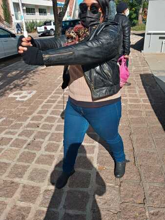

Gostaria de apresentar-me de forma simples, uma vez que não gosto de chamar atenção, como se fosse mais especial do que os outros, mas a minha trajetória não permite.
Basicamente, sou uma nerd raiz introvertida, que gosta de séries, filmes, histórias em quadrinhos, animes, mangás, videogames, trilhas sonoras, colecionáveis, RPG de mesa e de coletar informações aleatórias na Wikipédia. Porém, nsob análise mais profunda, sou uma sobrevivente.
Enfrentei inúmeras dificuldades desde a infância até ano passado, e não é necessário entrar em detalhes. O que posso afirmar é que, se estou aqui, é porque sempre acreditei num futuro melhor.
Sempre tive facilidade em lidar com tecnologias. Aos 13 anos tive meus primeiros contatos com HTML, e aos 14, ingressei no Ensino Médio com Curso Técnico de Informática Integrado. Lá, aprendi que:
Na reta final de desenvolvimento do TCC, em setembro de 2012, notei que minha visão estava muito embaçada. Pensei que fosse o grau de miopia aumentando, mas o quadro era mais complicado. Durante todo aquele mês, fiz vários exames de sangue e imagem para descartar inúmeras hipóteses. Em outubro, fui diagnosticada com a rara doença autoimune chamada Síndrome de Vogt-Koyanagi-Harada. Naquela época, meu maior desafio era lidar com o fato de que eu poderia perder avisão a qualquer momento, de que havia um TCC a ser terminado, entregue e apresentado, e que não recebi apoio nem do professor orientador, nem da turma.
Apesar de tudo, concluí tudo o que precisava ser feito. Depois, frustrada com a área tech, passei a trabalhar com telemarketing, o que não durou muito tempo, pois logo minha doença se agravou. De 2014 at[e 2022, vivi em função de tratar a doença. As vidas profissional, acadêmica e social entraram em coma com consultas médicas semanais de até 5 vezes por semana, a burocracia para ter acesso a medicações de altíssimo custo, e o suspense de um dia estar enxergando bem, e no outro quase nada, sem falar nos efeitos colaterais dos imunossupressores.
Inquieta, nesse período dediquei-me a estudar minha doença para entender o que estava acontecendo comigo. De um simples artigo na Wikipedia, passei a ler artigos científicos e a trazer várias perguntas aos meus médicos (tratar-se num hospital universitário tem suas vantagens), além da interação com outros portadores da doença em grupos de apoio no Facebook. Aprendi tanto que meus médicos me orientaram a criar um canal para esclarecer dúvidas sobre a síndrome, e pude ter mais resiliência para lidar com os desafios do tratamento.
Fiz duas cirurgias, a última no ano passado. A catarata foi removida depois de 1 hora e 40 minutos, mas um edema de córnea me impede de ver além dos vultos e luzes.
Agora estou de volta à área tech, motivada a desenvolver aplicações para facilitar a rotina de deficientes visuais, e também jogos acessíveis (por que não?).
Como diz a música "New Song" de Howard Jones : "Estive esperando por tanto tempo para estar aqui e cantar esta canção"
Para encerrar, fica o último verso do refrão da mesma música: "Jogue fora suas correntes mentais!" 